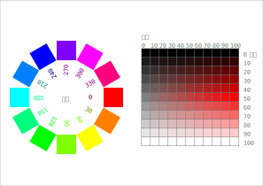
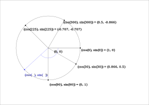

シール（カード）の作成は「基本設定」のメニューから、 次のようなブロックを選ぶところから始めます。
この右側の凹みの中にいろいろなブロックを置いていきます。
まずは文字を書いてみましょう。書く場所は紙の左端からの距離と上端からの距離（単位 mm）で指定します。
ちなみに、１枚のカードの大きさは、良く使われる A-one の F8A4-5 という規格の場合、97mm × 69mm です。
Blockly ではじめる↓こういうシールができます。
色やフォントなど、各カードで変らないことは、繰り返す前（上）に置きます。 カードごとに繰返すことは、「各カードに対して...繰り返す:」の右側の凹みの中に置きます。
これだと地味すぎるので、カードごとに色を変えてみましょう。
Blockly ではじめる↓こういうシールができます。
こんどは「塗りの色」を「各カードに対して...繰り返す:」のなかで変えています。 「カウンター」という“変数”
は繰り返すごとに、1 ずつ増えていきますので、カードごとに色が変わるのです。
色を表すやりかたはたくさんありますが、ここでは「色相」・「彩度」・「輝度」の 3 つで表すやりかたを紹介します。次の図を見ると、すぐに意味がわかると思います。
左側の輪は色相を説明しています。 「色相」は、赤が 0, 黄色が 60, 緑が 120, … 青が 240 という角度に割り当てられていて、360 でまた赤に戻ります。 右側の四角は（色相 0 の時の）彩度と輝度を示しています。 「彩度」は白・灰・黒などが 0 で、純色は 100 になります。 「輝度」は黒が 0, 白が 100 で、純色は 50 になります。
あまり規則的すぎても面白くないので、乱数を使ってみましょう。 乱数はサイコロを振って出る数のようにデタラメ※な数のことです。
（※実は、 コンピューターはデタラメなことができないので、 本当にデタラメなのではなく、現在時刻などから規則に従って計算するけれども、 人間にとってはデタラメに見える数、です。擬似乱数と言います。）
Blockly ではじめる↓こういうシールができます。
（実行するたびに変わります。）
色相を乱数で変えてみました。実行する度に結果は変わります。
文字列のなかからランダムに文字を一つ選ぶのはよく使うので、 専用のブロックを用意しました。
Blockly ではじめる↓こういうシールができます。
（実行するたびに変わります。）
ある条件が成り立つかどうかによって処理をわけてみましょう。 次のようなブロックを使います。
変数「i」の値によって、置く文字列の種類を変えています。
Blockly ではじめる↓こういうシールができます。
３回に１回だけローマ字でなくひらがなで表示しています。
繰返しのなかに繰返しを入れてみましょう。
繰返しのためのブロックは何種類かありますが、 ここでは変数を変えながら繰り返すのものを選びました。
これを使って、色を少しずつ変えて長方形を描いていきます。
Blockly ではじめる↓こういうシールができます。
内側の繰返しのなかでは、変数（この例では「x」）の値が変っていくので、 その変数を利用して新しい色を計算しています。
同じ値を２回以上使うため、「今の色」という変数に、 計算した色を一旦代入していることにも注目してください。 代入には次のようなブロックを使います。
三角関数を使うと、図形の表現の幅が一気に広がります。三角関数といっても、その定義だけを知っておけば充分で、 高度な性質を理解する必要はありません。三角関数の定義は次の図を見てください。
図の青色のところを見てください。 半径 1 の円の中心が (0, 0) にあるとき、(0, 0) を通り、水平（つまり(0, 0) — (1, 0) を結ぶ線分）と角度 t をなす線分が 円と交わる点の座標が (cos(t ), sin(t )) です。
正多角形を描いてみましょう。
Blockly ではじめる↓こういうシールができます。
「お絵かきプログラミング」が用意しているブロックはこれだけではありませんが、 主なものは一通り説明しました。あとは、実際に使ってどのような働きをするか、 試しながら学んでいってください。